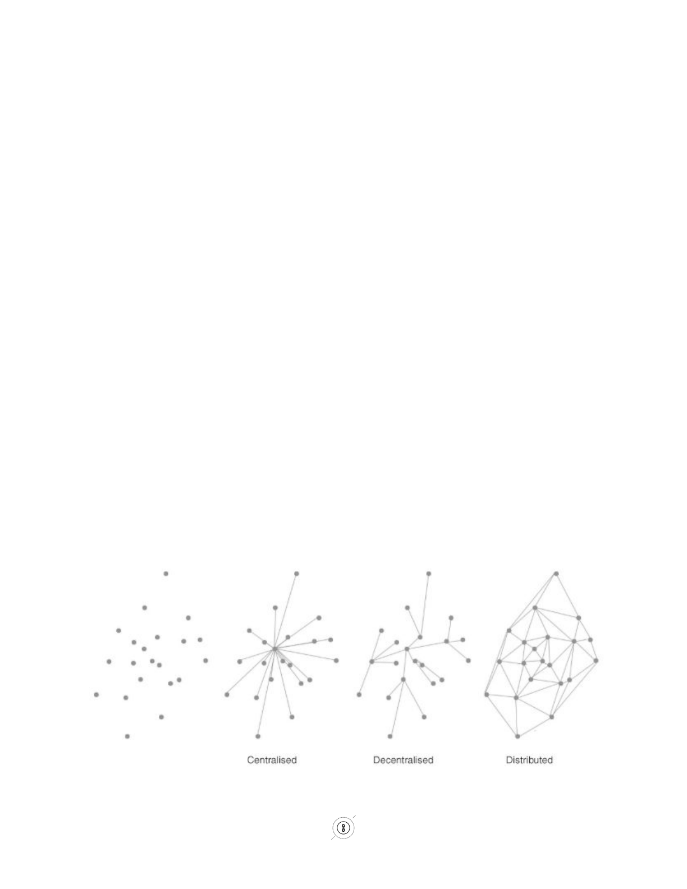
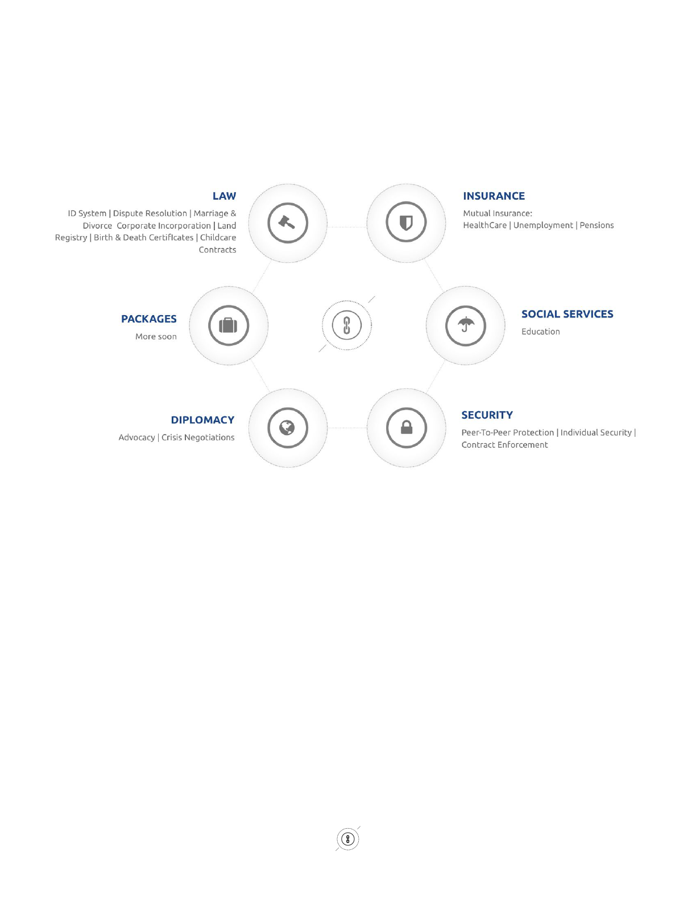
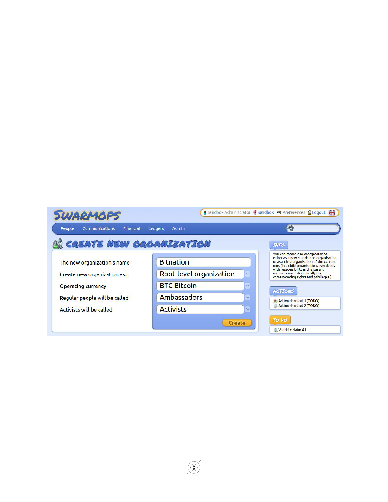
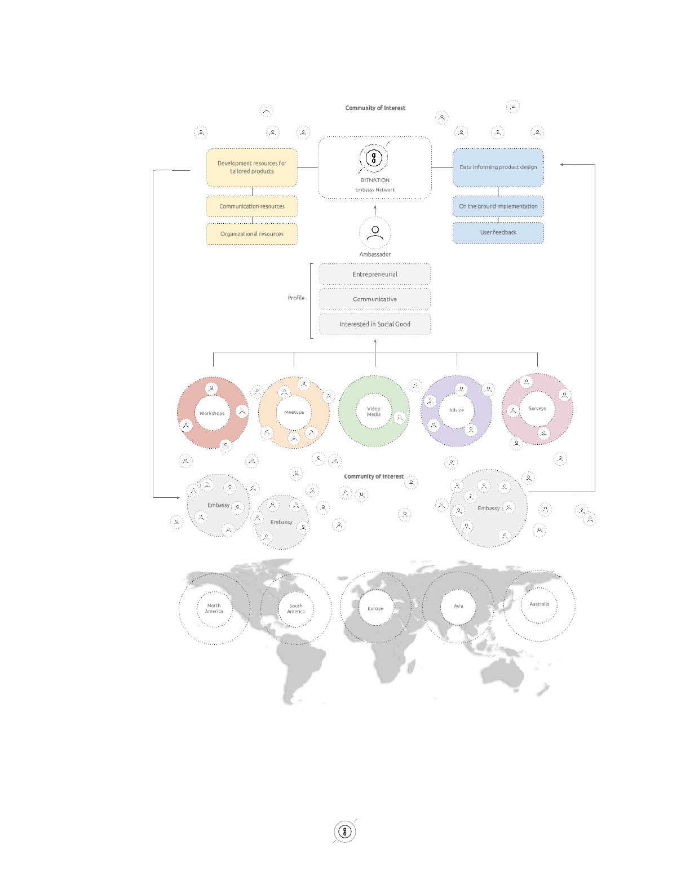

ɃITNATION Whitepaper
BySusanneTarkowskiTempelhof
With thanks to, amongst others, Rick Falkvinge and Jason Farrell for comments, additions, and
revisions.
Decentralized - Borderless - Voluntary - Nations (DBVNs)
ɃITNATION: Governance 2.0 > Borderless > Decentralized > Voluntary
This Whitepaper is open for community input - please give your thoughts and ideas through adding
comments. Non-constructive comments will be removed. A final White paper will be produced, based
on community input, after the crowd sale close, on January 10th, 2015.
●
For more details on the BITNATION platform and services, please see the DEV Plan.
●
For more on the BITNATION business strategy and financials, please see the BIZ Plan.
●
For further information on the XBNX Crowdsale, please see the TERMS Paper
Index
1. Abstract
1.1. Governance 1.0
1.2. Governance 2.0
2. Distributed Borderless Voluntary Nations (DBVN’s)
2.1. DBVN Definition
3. BitNation
3.1. Bitnation Overview
4. Bitnation Human and Regional Architecture
4.1. Ambassador Network and Embassies
4.2. The World's FIRST Self-Governance Co-creation Platform.
5. Conclusion
1

1. Abstract
1.1TheCurrentStateofAffairs:Governance1.0
Governance 1.0: We refer to governance 1.0 as the involuntary combination of governance and
geographical territory. To clarify, a governance entity democratic, authoritarian, theocratic or other type
of entity is a body which (successfully or unsuccessfully) claims a monopoly on violence over a specific
geographic territory, and in return they commonly provide various degrees of governance services such as
security, dispute resolution, and law enforcement to their subjects. More often than not, they also claim a
monopoly on these services, even though the services themselves are often poorly executed or
nonexistent.
Geographic Governance Monopolies Throughout History.
Governments with geographic monopolies have been the rule through most of human civilization,
their borders determined largely by the reach of their weapons technology. Since peoples within the
borders of a city state, kingdom or nation state tended to have shared culture, history, language and
values, with little means of communication outside their own communities, cohesion was relatively easy.
In Europe, the Treaty of Westphalia (1648) established the nation state construct as the standard for
governance in the West; spreading globally in the 19th century largely through imperial expansion. By the
20th century, the nation state had supplanted vast empires, as well as unincorporated territories and
smaller ethnic states such as those in Italy and Germany; creating an of oligopoly of governance and
claiming nearly every square meter of the globe (apart from Antarctica). The initial intention was to have
mutually recognized borders and international institutions to resolve conflicts peacefully. However good
the intentions may have been, with the rise of political elites creating just a semblance of political
stability,thebordersthemselvesbecameasourceofconflictandresultedinfuelinginstability.
Compounding property rights and other governance issues is the fact that nation state borders
continue to represent oppression to millions. The tensions created by arbitrarily drawn state borders are
perhaps exemplified by the illconceived SykesPicot agreement (1916). During the last years of the ailing
Ottoman Empire, international borders in the Middle East were crudely drawn pursuant to colonial
2

interests of the period and have exacerbated ethnic and religious conflict. Even though the ongoing
1
human tragedy exacerbated by the SykesPicot borders is clear to the world, changing decadesold
international boundaries that are supported by political interests and international demand for stability is
virtuallyimpossible.
TheMythofChoice
Some suggest that individuals living in deplorable conditions are free to “vote with their feet” and
move from one country to another to avoid oppression, famine, and other problems. This obtuse and
simplistic remedy rarely proves so simple in reality, primarily because truly free and unencumbered
movement between countries does not exist. For a farmer in the Central African Republic or a fruit
vendor in Bangladesh, obtaining foreign visas or citizenship can be an insurmountable obstacle. Even
whentheydo,theyoftenfindlittlechangesfromonegovernmenttothenext.
Even in more prosperous countries such as the U.S., political stagnation may in large part be the
result of the confines of nationstatehood. Politicizing government services and forcing conflicting
political visions on a very diverse population has led the U.S. down the path of dysfunction, inhibited
social mobility, higher debt and lower economic growth; it has driven a wedge between people who
otherwisemayhavelittlereasonforanimosity.
Enormous swaths of the global population are forced to support laws and policies they may detest
simply because political leaders can convince more than half the voting population of a nation state that
preserving a miserable status quo is vital to their security or interests. In response, hundreds of separatist
movements have gained traction and asserted a right to independence from central governments viewed as
despotic, oppressive, or at least ineffective. The Arab Spring, the Scottish independence referendum, the
Catalan independence movement, protests in Hong Kong, the growth of Islamic terrorist networks and
nativist movements in Europe have all been the diverse symptoms of a global power struggle exacerbated
by ossified nation states that have remained unwilling or unable to ensure economic mobility and political
choice.⁴
1
http://www.npr.org/2014/06/25/325503790/journalistdexterfilkinsexplainsbitterconsequencesofiraqwar
⁴ (enter ref to free world report)
3
TheImpactofGlobalization
The geographical monopoly on governance was perhaps easier to maintain in a time and age
before industrialization and globalization happened. Now however, the course is largely irreversible; with
the seemingly unstoppable move towards globalization, the world has become increasingly less
geographically contingent through international trade, instant and borderless connectivity through
communication channels like Internet, cheap transport, and large migrant movements. People are
increasingly connected across borders, resulting in desires less defined by their geographical origin or
location. In essence, this means that over time, nation states and their transnational counterparts such as
the United Nations (UN) are becoming less relevant, and transnational institutions such as the United
Nations (UN), in tandem with nation states due to being built on the same outdated, topdown
monopolistic foundation. The Westphalia system has a “best before” date, and that day has arrived. Why
should 7.125 billion people on Earth only be able to choose between perhaps a handful of different types
of governance and without freedom of movement between those options? The limited choice of
governance systems does not necessarily make sense to the modern global citizen. Enter the birth of
DecentralizedBorderlessVoluntaryNations(DBVNs).
Entertheblockchaintechnology
Technology is changing human interaction almost faster than scholars, pundits and journalists can
keep up with, resulting in the uniting of humans around the globe in an unfathomably complex web of
relationships. New “borderless” nations are emerging: communities of people who live all over the world
and who share common values, interests, and cultures. We believe that given the right opportunity, these
new nations will thrive as geopolitical turmoil continues to constrict the old. With the release in 2009 of
Bitcoin’s blockchain technology, enabling for the first time a way to verify transactions without a single
authoritative third party, now may be the best time in human history to reassess our reliance on the
traditional nation state a form of governance that is growing outdated, and which is holding back human
socialandeconomicevolution.
The reason why the blockchain matters is because the blockchain transactional database has the
basic recordkeeping properties required of a governance system. Once the information is online, it exists
forever on the network. The blockchain has a rigorous verification process that is virtually impossible to
4

crack once the network reaches a certain critical mass. It can record births, marriages, deaths, property
ownership, business contracts and a variety of other records traditionally created and held by
governments. The identities of individuals on the network can be established definitively through their
unique “signatures”, and in turn, those individuals can sign and verify transactions (e.g. the attending
physician at your birth or the priest officiating your wedding). Instead of a government official acting as
notaryorothertrustedthirdpartyverifier,theconsensusoftheblockchainnowtakesonthatrole.
It is well established that free markets improve quality and reduce cost, while monopolies are
generally the subject of derision, a centralization of resources and authority. We believe that it is possible
for today’s innovators to apply the competitive spirit of the marketplace to governance and forever end
the power of monopolistic bureaucracies to squander resources, abuse authority, and oppress the
powerless. By offering real choices rather than controlling and determining the outcomes through central
government nation states, entrepreneurs can enable the reclamation of personal sovereignty and enhance
theirownautonomy.
ABetterFuture
To that end, BitNation proposes the creation of a platform that will enable the emergence of
Decentralized Borderless Voluntary Nations (DBVNs). This platform is entirely open source and
forkable, allowing practically anyone to create their own DBVN. We hope that BitNation will be only the
first of many
alternatives to traditional monopolistic governance to use blockchain verification qualities as
a replacement for the “third party” authority hitherto monopolized by governments. We believe the
establishment of property rights, marriage, incorporation, identification, dispute resolution and other
governance services can be accomplished without resorting to abhorrent behavior such as bribery,
exorbitant fees, politicization and coercion through arbitrary authorities. Beyond the aforementioned, the
possibilitieswithDBVNsarebothencouragingandvirtuallylimitless.
1.2TheChangeofParadigm:Governance2.0
5

Governance 2.0: We refer to governance 2.0 as the dissociation of geography and governance, as
well as the voluntary choice between governance service providers. Governance 2.0 allows for a plurality
oflegalsystemstocompeteonafreemarketofferingmorefairservicestoitsmembercitizens.
Modern society indicates patterns of behaviors that are not likely to drastically change in a Governance
2.0context,leadingtotheassumptionthat:
● The majority of people do want various degrees of governance services; some want more and
somewantless,ornoneatall
● The majority of people want an easy choice of governance service providers e.g. an endtoend
solution instead of having to chose between every single service provider themselves.
Aggregationofservicesisakeypartofthesolution.
● Many people do not wish to leave their geographical area because of their attachment to their
family, friends, work situation, and culture. Relocation should not be a requirement to choose
yourgovernanceserviceprovider.
● The existing blockchain technology enables governance 2.0 in its function of being a
cryptographicallysecurepublicledger.
BlockchainTechnologyfromaBirds’EyeView
The reason why the blockchain matters is because the blockchain transactional database has the
basic recordkeeping properties required of a governance system. Once the information is online, it exists
forever on the network. The blockchain has a rigorous verification process that is virtually impossible to
crack once the network reaches a certain critical mass. It can record births, marriages, deaths, property
ownership, business contracts and a variety of other records traditionally created and held by
governments. The identities of individuals on the network can be established definitively through their
unique “signatures”, and in turn, those individuals can sign and verify transactions (e.g. the attending
physician at your birth or the priest officiating your wedding). Instead of a government official acting as
notaryorothertrustedthirdpartyverifier,theconsensusoftheblockchainnowtakesonthatrole.
2. Distributed Borderless Voluntary Nations (DBVN’s) Overview
6

Hence, with the above parameters in mind, we have outlined DBVN’s as a concept and
Bitnationasanenterprise.
2.1 DBVN Definition
As a ‘nation’ providing governance services to its customers, the primary purpose of a DBVN is
to provide an allencompassing set of services through identifying and aggregating the best technology
and service providers currently available, and then deliver it to the end user in a comprehensive package.
Howeveritdiffersfromanormalnationstategovernmentinthefollowingways:
Decentralized: Decentralization is the process of redistributing or dispersing functions, powers,
people or things away from a central location or authority. In the realm of a DBVN, decentralization
translates into both technological and human decentralization through striving for P2P (PeertoPeer)
technology, modular interfaces, API (Applications Programming Interface) layers, and forkable
(duplicated) code. This means that every user can become its own node and transform the platform to
theirownliking.
Decentralization also benefits from not having any single point of failure in the event of an attack.
Human nodes should be able to reorganize themselves in resilient nodes no matter what part of the
network comes under attack be it human or other technological factors. In practice, this means that
variousclusters,regionalorotherwise,areentirelyautonomous.
7

Borderless: DBVN’s do not limit their services to any specific geographical area, ethnicity or
other categories of populations. They have no borders or ports of entry: no land boundaries, airports,
coastlines,orseaports.DBVN’sprovideservicestoallareas,regardlessofwhereitislocated.
Some would claim that a DBVN is ‘virtual’ by design. Although virtualbydesign is an intuitive
assumption,itdoesnothavetobebasedentirelyinthevirtualworld,noritsservices.
Voluntary: DBVN’s do not use force, fraud, or coercion, nor subject their citizens to involuntary
servitude, peonage, debt bondage, or slavery. Due to the fact that DBVN’s are voluntary in nature, they
are inherently free of persecution, intimidation, reprisals, and other forms of systematic violence.
DBVN’s compete in a free market where customers, the “citizens” of the platform, voluntarily choose
which DBVN’s they want to use including the option of using several DBVN’s, or none at all, or if they
sochoosetocreatetheirownDBVN.
Nation: The definition of a nation is the following: “A nation is a large group of people who
share a common language, culture, ethnicity, descent, or history”. In the case of DBVN’s it is likely that
peoplewouldbeprimarilyconnectedthroughamutualcultureandlifestyleexpectation.
A nation is a voluntary formation rather than a governing entity. This comports with our
definition of a DBVN. We provide the tools for governance but do not impose them, nor do we impose
anyspecificcodeoflaworregulations.
In essence, our vision is to make the choice of governance service providers for individual users
as easy as choosing to join a social network (Facebook, LinkedIn, Twitter, etc). Users can choose several
of them or choose none. Users will also be able to create their own DBVN through forking the Bitnation
sourcecode.
8
3. Ƀitnation
Bitnation is a Decentralized Organization (DO), a forprofit entity incorporated on the Bitcoin
Blockchain through the CounterParty technology. Bitnation will offer a platform which includes an ID
System, a Decentralized Application (DAPP) Library, a dispute resolution mechanism, insurance,
diplomacy and security services and more, mostly through offering a small transaction fee on selected
DAPPSdownloadsandSmartContracts.
Through making it nongeographical and voluntary, we create a market that is fast moving and
competitive allowing for innovation and improvement which the current nation state system is incapable
of. Bitnation will aggregate services, both inhouse developed services like arbitration, blockchain
incorporation, marriage. Additionally, Bitnation will aggregate external services like education,
healthcare, security. Services will be available both as independent services and in a collection of
packagedservices.
Our services will be accessible on any blockchain that is compatible, including but not limited to
Bitcoin and Ethereum. The functions of Bitnation will be as “blockchainagnostic” as possible to mitigate
theriskofa51%attack¹orpoormaintenanceofasingleblockchain.
Asfarasweareaware,BitnationisthefirstattempttobuildaDBVN.
¹ LearnCryptography,www.learncryptography.com/51attack/
3.1 Ƀitnation Overview
Bitnation aims to provide services a traditional government provides, including dispute
resolution, insurance, social services, security, diplomacy and various packages. Bitnation will identify
the best technology out there for our governance services, as well as vetting suitable subcontractors for
nontechnicalgovernanceapplicationsviadiplomacyandsecurity.
9
Bitnation will negotiate prices to buy services in bulk, therefore making it cheaper for its
customers to purchase the services from Bitnation than directly from a traditional provider, with a greater
vetting of user interface and support. As an organization, Bitnation stands by its principle of being
“Borderless, Decentralized, and Voluntary” at all times, having transparency with its plans and finances,
aswellassolelyusinganddevelopingopensourcecode.
The keyfunctionalities of the Bitnation technological platform consist of a P2P browser, an ID
System, a DAPP Library with an API layer where everybody can download DIY Governance DAPPs or
upload and give away (or sell) their own DAPPs. The dispute resolution and smart contract function key
functionalitiesaswellwhichsupportsmanyotherpartsofthegovernanceecosystemintheplatform.
However, to clarify some commonly asked question with respect to what we intend to provide, or not
provideBitnationwill
provide:
● AnIDsystem,includingphysicalIDs,basedonverificationandreputation
● Adisputeresolutionmechanismwithvoluntarychoiceofcodeoflaw,andarbitrator
● Diplomacy,asfarasglobaladvocacygoes
● Security,asintoolsfororganisingvoluntaryneighbourhoodsecuritysystems
Bitnationwill
not
providethefollowingfunctionsorservices:
● A diplomatically recognized “citizenship” enabling international travels (unless it reaches critical
massadoption)
● Acodeoflaw(choiceofcodeoflawisentirelyvoluntary)
● Physicallawenforcement.Bitnation’sprimarycrimepreventionmethodisitsreputationsystem²
● A blockchain or a currency. Bitnation will rely on different blockchains, and will be using Bitcoin
as the standard currency, and over time, move to accept other currencies such as Litecoin,
Peercoin,Dogecoin,andothercoinsavailableonCounterWalletanddigitalcurrencyexchanges.
Please find an overview of Bitnation’s six strands of service categories below. For more
information on each individual services, see the DEV PLAN (attached). In this Whitepaper we will focus
more on the human aspect of Bitnation, because the human network is a keyenabler of worldwide
10
adoption of governance services; a largely self organizing network building the new and free societies
locally,andinternationally.
Bitnation is committed to identifying and aggregating the best technology available while
working with industry leaders in the cryptology field to organize it into a comprehensible and user
friendly platform delivered to the end customer. To that end, we are looking at technologies such as
Codius Smart Oracles, CounterParty, Ethereum, Open Transactions and other socalled “Bitcoin 2.0”
technologies,andBitcoinmetaprotocols.
Bitnation is committed to the open source philosophy both in terms of the technology it uses, as
well as in sharing all its code on GitHub (a repository webbased hosting service), for the community to
improve, or fork. At its core, the Bitnation platform is NodeJS and JavaScript which makes it very
modularandapproachableforthirdpartydevelopers.
HerearesomewayswhichtheBitnationplatform,anditsDIYGovernanceDAPPscanbeused:
● In emerging and frontier markets, governance services do not exist or are nearly impossible to use
because of corruption and the endless red tape of bureaucracies. Yet these services are sorely
needed; from deeding land, to corporate incorporation, mutual insurance, dispute resolution, and
more. Imagine for example Ricardo who owns a house in the favela in Brazil, but due to
government distrust and corruption he cannot deed it to protect it for his children’s future use and
enjoyment. Once deeded, he can then invest in building on it, and he can use it to get credit to
payforperhapssettingupacompany,orhischildren’seducation.
● Imagine a phone salesman in Cambodia who can’t open a small back office company because it’s
difficult to incorporate due to the significant bureaucratic red tape he has to overcome (the
incorporation process takes an average of 104 days in Cambodia). But the phone salesman needs
to incorporate to sell equity to raise funds, in order to make his vision come true. He can do that
through the Bitnation platform, through creating a “coin” and each individual “coin” then
becomes a cryptographically secure corporate equity entity, through filing a contract on the
blockchainwiththeShareholdersagreement.
● Or take for instance a Christian family living in a country with strict Sharia Laws, who won’t
settle their disputes in the local courts because they only cater to Sharia. The examples of where
11

the existing systems in place, or the lack thereof, are preventing poor and middleclass people
worldwidefromenjoyingpolitical,socialandeconomicmobilityareendless!
4. Ƀitnation Human and Regional Architecture
12
The ‘human architecture’ of Bitnation through its implementation networks, are more important
than its technology. The human architecture is key to its longterm organic survival not only as
distributed technology, but also decentralized in its inperson implementation, usage, and development.
Through the Ambassador Network and the Embassy hubs, Bitnation is creating a selfsustainable network
of semiautonomous and fully autonomous human nodes who can continue Bitnation’s work regardless if
other parts of its structure, such as the management or development components, gets compromised
securitywise.
Bitnation’s geographical adaptation strategy is aimed at emerging market and frontier market
economies. Arguably, the services Bitnation offers are valuable all over the world, considering that they
are more efficient and voluntary than services offered by traditional nationstate governments. However,
the part of the world where they are most sorely needed is in the developing world, where either those
services does not exist at all, or are so plagued by bureaucracy and corruption that they are generally not
usedbythepopulation.
Système D
Further on, the regulatory landscape in the Western hemisphere (North America and Western
Europe) may make it challenging to introduce new ideas because of the density of regulations already in
place, and the capacity of the governments to enforce those regulations. Some recent examples of
inventions facing regulatory hurdles are cryptocurrencies, car sharing services, and equity crowdfunding.
We should expect that the greatest development of these technologies although often conceived in the
West will reach mass adoption and perfection faster in the developing world which may in turn push
Western governments to adjust their own strategies, in order to stay competitive for its citizen as a
desirable place to live; and in its place as leaders of the global economy. More precisely, we will initially
target the so called “System D” Economy, an economy estimated to be worth 10 trillion dollars peryear²,
consisting of people living ‘outside of the system’ mainly commercants who are unbanked, undeeded,
nonincorporated,asmentionedintheintroductionpartofthisdocument.
In the developing world, ethnic and religious minorities receive unequal access to government
services; deprivation of essential services are even used to punish some groups, and governments as a
13
whole have tended to put their own interests ahead of their citizens. Uneven access to basic services has
led to the rise of the massive “shadow economy,” also called System D; an outlet for economic activity
when doing business on the books has proven too expensive and impossibly complicated. System D is the
second largest economic system in the world, after the U.S. economy, totaling over $10 trillion dollars
annually. System D has proven muchneeded relief from government oppressiveness around the world,
2
withtransactionsoccurringofftherecord,generallyfreeoftaxandregulatoryburdens.
However System D also has an enormous drawback: entrepreneurs who circumvent sclerotic or
corrupt government services may be able to engage in trade, but they are unable to secure government
protection, legal guarantees and the financial benefits of property rights. Because of this, they are likewise
unable to grow a business and capitalize on existing income. The longitudinal study by Hernando de Soto
foundthistobetrueonnearlyeverycontinentintheworld.
3
Keyregions and countries are defined by its Bitcoin penetration, for two reasons basic
knowledge and understanding of cryptocurrencies helps with popularising the thought of the blockchain
being used for other purposes. The second reason is because of the Bitnation Ambassador network the
implementation of the technology will be a lot easier with a lot of tech savvy Bitcoin Entrepreneurs on the
ground. Countries with high Bitcoin usage are generally speaking either countries where remittance
payments are a large part of the economy (Mexico, Philippines) or countries whose economy is highly
unstable (Argentina, Greece, Cyprus etc). The Ambassadors will identify keylocations throughout Latin
andCentralAmerica,Africa,andAsiaforthispurpose.
4.1 Ambassador Network
In alignment with the principles of borderless decentralization, autonomy and selfgovernance,
we have structured our Ambassadors Network to enable a large number of volunteers to cooperate on
commongoalsinquantitiesofpeoplepreviouslynotpossiblebeforethearrivaloftheInternet.
The unique proposition of Bitnation’s Ambassador Network is to be the first sociocultural
context for the cocreation of a more humane and peoplecentered, rather than a moneycentered, way of
2
http://www.forbes.com/sites/benzingainsights/2011/11/07/riseoftheshadoweconomysecondlargesteconomyintheworld/
3
https://en.wikipedia.org/wiki/Hernando_de_Soto_Polar
14

global governance. The Ambassador Network becomes the global social context of shared values,
selforganizingdirection,codevelopingmethods,anddistributingbestpracticesforallBitnationusers.
The purpose of the Ambassadors is to identify governance needs in their communities, help
people discover (and understand) how to implement DoItYourself (DIY) blockchain based solutions to
resolvethoseproblems.
We will work with each Ambassador to determine what success criterion we will use to assess
their progress, what event constitutes success. Then we will aggregate resources to provide what they will
need to get there. What we are offering Ambassadors is the opportunity to capitalize on the ground floor
potentialofbecomingtheglobalteamofautonomouspeoplecocreating.
A Self-Governance Co-creation Platform.
Think of it this way...Most of us already are fully engaged in “cocreating” through our use of
three of the World's biggest social networking platforms Facebook, Twitter and YouTube. What we
havenotbeendoingyet,however,iscapitalizingonthoseengagements.
All three aforementioned platforms deliver tremendous value to each and every one of us. It
should also be noted that when we spend time on these platforms; we are not just users (as in passive
consumers), but we are the actual creators and producers of the value that these platforms deliver. In other
words, we have already cocreated the value the owners of these platforms capitalize. Value/money is
acquired from the creative and social value of our
content which these platforms sell to advertisers who
wanttoselltheirproductsandservicestous.
We have already cocreated the Facebook, Twitter and YouTube content their respective
stockholders have capitalized into billions. But again, we the content creators, have yet to capitalize on
those engagements. The time has come for us to begin to consciously and purposefully engage in
capitalizing our collective creativite potential as our new way to attain, beyondmonetary wealth, a more
socioeconomicallyevolvedandpersonallyfulfillingwayofgovernance.
Ambassadors and Embassies
15

Hence, the Governance 2.0 adaptation strategy of Bitnation is through its partners in the field, the
Ambassadors, and the Embassies. The Ambassadors are volunteer Bitcoin Enthusiasts across the world.
The most important type of Ambassador is the ‘Ambassador Entrepreneur’ who will actively go out and
look for governance problems in his community, and find ways to solve them through the blockchain
DAPPs(DistributedApplications).
The Ambassador Entrepreneur should be motivated by social good, as well as the opportunity to
createhisownbusinessesandmakemoneythroughtheDAPPs,orinotherways.
The other category is the ‘Advocacy Ambassador’ someone who is not an entrepreneur but who is
passionate about the cause of bitcoin and voluntary blockchain governance, and who wish to promote it in
their circles, or to the media, or lobby for the sake of Bitcoin/cryptocurrencies and Bitnation. For instance
if a country want to change the legislation to make it harder for Bitcoin exchanges or markets, the
AdvocacyAmbassadorwillassistinthisregion.
The third category of the Network is the ‘Support Ambassador’ e.g. people who are happy to help
other people in the network with their expertise, like local legal systems, management tools, social media,
etc. The Support Ambassador is more of an internal network support operator with a distinct skillset that
helpstheotherAmbassadors,particularlytheAmbassadorEntrepreneur.
The ambassadors will conduct different activities like polling, workshops, meetups, outreach, as
well as other activities. Through those activities the ambassadors will meet other enthusiast and
entrepreneurs, who will form nodes of entrepreneurs and organize themselves into local hubs. These hubs
will be entirely independent and selforganized entity, that make their own profits, but they will be
supported by Bitnation in terms of being able to tailor DAPPs to their location, get communication
resources to help them market their DAPP’s as well as organization resources. In rare occasion, Bitnation
may also help to fund the Embassies. In reward for the support work, Bitnation get a larger user base for
its DAPP library, as well as more data to better design locally tailored DAPPS. (see table below for more
information
)
16

In order for the network to efficiently build and manage itself in a holacracy manner, well
described by Rick Falkvinge in the book Swarmwise. Swarmops was first used to build the Pirate party
Network, which started as one political party in Sweden called Pirat Partiet, and grew to a worldwide
movement of political parties with a staggering amount of 70 Pirate Parties around the world, with
multiplerepresentativesingovernments.
Swarmops is a HR system built for voluntary, decentralized cooperative organizations. It pushes
authority and decisionmaking power to the edges by design, and is built on the philosophy that
everybody in an organization is, at least in some aspect, a volunteer for that organization’s goals. By
decentralizing authority, HR, and finance, Swarmops makes it possible to scale an organization far
beyond traditional methods. This philosophy of power through voluntary collaboration also aligns very
wellwithBitnation’scorevalues.
Using Swarmops, the Ambassador network can scale organically across the globe, from regional
level down to city level, increasing in density dynamically as interest picks up in a location without
central planning, approval, or intervention. As new Ambassador candidates rise to prominence through
their actions and visibility, they can be assigned formal recognition in the Ambassador network in a
completely decentralized process, without any bottlenecks or centralized approval requirements. In this
way, the Ambassador network is expected to quickly grow to a pointofcontact network where you can
always ask local people for a way in to Bitnation, looking from the viewpoint of a future client. This
17

network also becomes a Bitnationinternal network of people across all geographic levels city, region,
continent.Swarmopshandlesthisthroughitsbasicphilosophyanditscorefunctionality.
Swarmops runs on free software, and is free software itself, further aligning well with Bitnation’s
core values. It is also going to handle Bitnation’s cryptocurrencybased accounting and provide complete
transparency as well as largescale inclusion, providing easy access to resources for the Ambassador
network.
Typicalambassadoractivitiesconsistin:
● Meetupswithothergovernance2.0andblockchaintechnologyenthusiasts
● Workshopswithlocalcommunitymembers
● Pollingqualitativeandquantitativetobetterunderstandlocalgovernanceneeds
● Videos:recordlocalworkshops
● Blogposts:writeoccasionalblogpostsonlocalchallengesandsolutions
● VirtualmeetupswiththeinternationalAmbassadornetworktoshareideasandexperiences
● HelpingotherAmbassadorsintheinternationalnetworkwithadviceandsupport
18

19

5. Conclusion
The challenges facing Bitnation and DBVN’s at large are many, both in terms of technological
obstacles, adaptation challenges, and in some cases; legal concerns. It is fair to assume that it will be a
bumpy road for the next decade ahead if or when DBVN’s have reached critical mass adoption on a
globallevel.
The technological challenges will be primarily that of the tradeoff between security and
mainstream accessibility. To understand what matters most to our customers will be a continual work in
progress. Maintaining the quality of services at a time of rapid expansion will also entail further
challenges. We are working diligently to mitigate that risk by keeping a large pool of talent engaged and
availableinourecosystem.
Adaptation challenges consist in the initial educational process of advertising blockchain
technology as a secure public ledger, second will be in regional cultural adaption. Bitnation counts on its
Ambassador Network to mitigate this transitional period which we admit will have its initial challenges
withgreatglobalrewards.
Maintenance of the system and the quality of the services requires a sound monetization strategy
which is sustainable longterm, but does not make the services inaccessible to anyone regardless of the
reality of their economic situation. The most intuitive way to monetize Bitnation and DBVN’s in general
is to charge a minimal transaction fee for transactions on our platform. However the monetization strategy
maychangeovertimeafterhavingbeentestedinthemarket,assessed,andfullyanalyzed.
Despite all the above known and unknown challenges, the Bitnation team is very optimistic about
the future of DBVNs. We believe that the time has come for a new, voluntary, and decentralized
governance paradigm. We believe using opensource technology and distributed networks are the most
effective way to bring that change into fruition. We believe the value of our services we provide to
customers, the improvements it means in their daily lives will be worth all the risks and will lead us to a
successfulfuturebothforBitnation,andforallofhumanity.JoinsusintheGovernance2.0paradigm.
Ƀ
itnationis…Borderless.Decentralized.Voluntary.
20

Fromananonymousforumpostonbitcointalk.org:
WeareCryptoLand(
Ƀ
itnation).
WearetheBirthofaNewVirtualNation.
WeareaFutureforOurWorldandHumanity.
WeareSentinel,UniversalandInalienable.
WeareRightsandFreedoms.
WeareTolerantandAccepting.
WearePolityandEntity.
WearePrivacyandSecurity.
WeareOpennessandTransparency.
WeareaDreamandaReality.
WeareCryptoLand(
Ƀ
itnation).
21